Power BI Viewer
Sign in once and see all your Power BI apps, reports, and dashboards in one clean desktop window — with live data-freshness at a glance and a hands-free slideshow for wall displays.
1Welcome
Power BI Viewer is one tidy desktop window for everything your team publishes to you in Power BI — apps, reports, and dashboards. No browser tabs. No repeated logins.
You sign in with your normal Microsoft 365 work account one time. The app remembers you, even after you close it or restart your computer. Everything inside — including Power BI Apps — uses that same sign-in, so nothing asks you to log in again.
What you get
Everything in one place
Your Power BI Apps, plus any reports and dashboards shared with you.
Always-current data
The toolbar shows exactly when your data was last refreshed, and reports can update themselves the moment new data arrives.
Instant search
Press Ctrl+K and find any report, dashboard, app, or workspace as you type.
Wall-display slideshow
A full-screen, hands-free presentation mode for TVs and lobby screens.
Read Install & sign in, then Power BI Apps — that is where most of your content lives. If you run a wall display, also read Slideshow & wall displays.
2Install & sign in
Download
Your administrator shares a download link. Pick the file for your computer:
- Windows: the file ending in
Windows-Setup.exe - Mac with Apple chip (M1/M2/M3): the
Mac-arm64.zipfile - Mac with Intel chip: the
Mac-x64.zipfile
Click the Apple menu → About This Mac. If it says "Apple M1/M2/M3", pick arm64. If it says "Intel", pick x64.
Install on Windows
- Double-click the downloaded
...Windows-Setup.exe. - Windows may show a blue "Windows protected your PC" screen. This is expected — see the note below.
- Click More info, then Run anyway.
- The installer finishes in a few seconds. No admin rights needed.
- Open Power BI Viewer from the Start menu or desktop shortcut.
The app does not yet carry a paid publisher certificate, so Windows is cautious the first time. It is your own organization's app and safe to run. You will only see this during install — not every day.
Install on Mac
- Double-click the downloaded
.zipto unzip it. - Drag Power BI Viewer.app into your Applications folder.
- The first time you open it, the Mac may say it "cannot be opened". Click Cancel (not Move to Trash).
- Open System Settings → Privacy & Security, scroll down, and click Open Anyway.
- Confirm once. After this, the app opens normally every time.
Sign in (one time only)
- Open the app. You will see the sign-in screen.
- Click the orange Sign in with Microsoft button.
- A Microsoft window appears. Enter your work email and password, and approve the usual security prompt on your phone if asked.
- You land on the Home screen. Done.
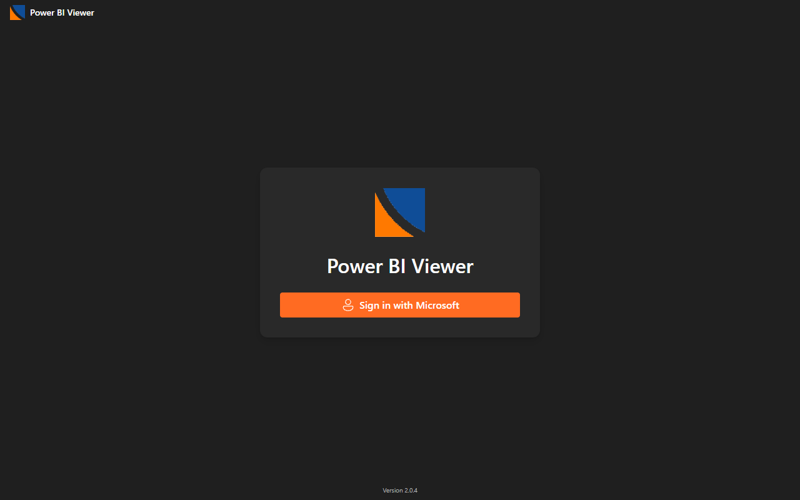
Your sign-in is stored safely on your computer. The next time you open the app — even after a restart — you go straight to Home. You are only asked to sign in again if you sign out, switch accounts, change your password, or leave the app unused for a very long time.
A red "Sign in failed" bar appears with the reason. Just click Sign in with Microsoft again. If it keeps failing, see Troubleshooting.
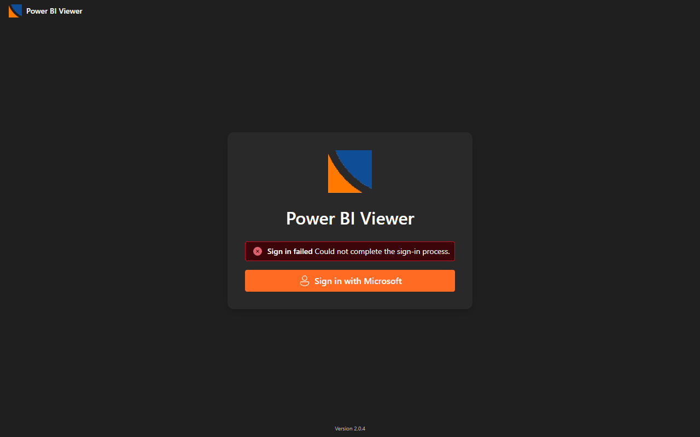
3Finding your way around
The window has three parts: a title bar across the top, a sidebar on the left, and the main area in the middle.
The title bar (top)
- Left: the logo and app name. Drag this bar to move the window.
- Center: the search box — "Search reports and dashboards..." — with a Ctrl+K hint. Click it or press the keys to search.
- Right: your avatar (your initials in a colored circle) and a badge showing your organization. Click the avatar for Switch account and Sign out.
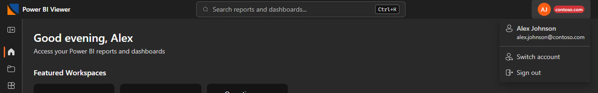
The sidebar (left)
The button at the top expands or collapses the sidebar. Collapsed, it shows only icons — hover over an icon to see its name. The items are Home, Workspaces, and Apps, with Settings at the bottom. The screen you are on is marked with an orange bar.
It begins as icons-only every time you open the app. Click the toggle at the top whenever you want the labels back.
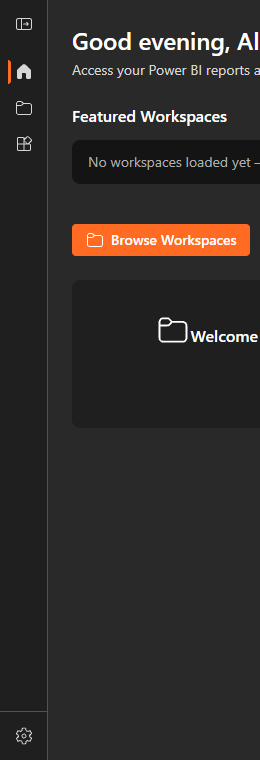
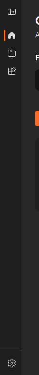
4Home
Home greets you by name and gives you quick ways back into your content. A Refresh button at the top-right reloads the lists.

What's on Home
- Featured Workspaces — up to three cards as a quick signpost. Clicking any of them takes you to the Workspaces page.
- Browse Workspaces — the orange button, always visible. Your main door into everything.
- Frequent — a strip of the items you open most.
- Recent — what you opened lately. Each item has an Open action and a Slideshow action.
Before you have any history, Home shows a simple Welcome card with your email. Open a few things and the Frequent and Recent areas fill in on their own.
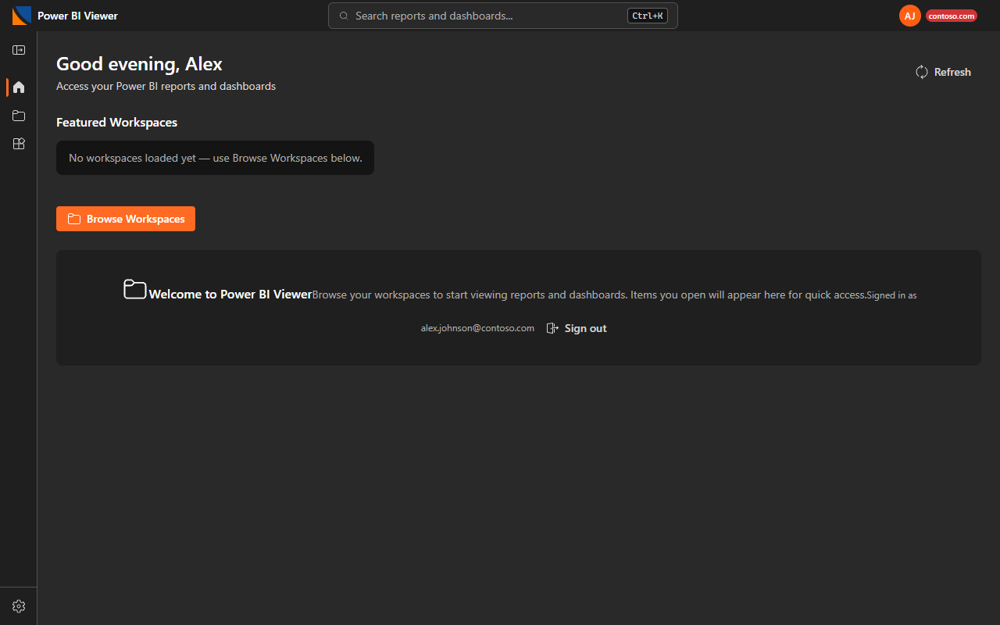
5Workspaces
The Workspaces page lists every workspace you can see. Click a workspace row to expand it and load what's inside.
- Reports — document icon with a Report badge.
- Dashboards — board icon with a Dashboard badge.
- A small count badge shows how many items the workspace holds.
Click any item to open it. The Refresh button at the top re-fetches the whole list.
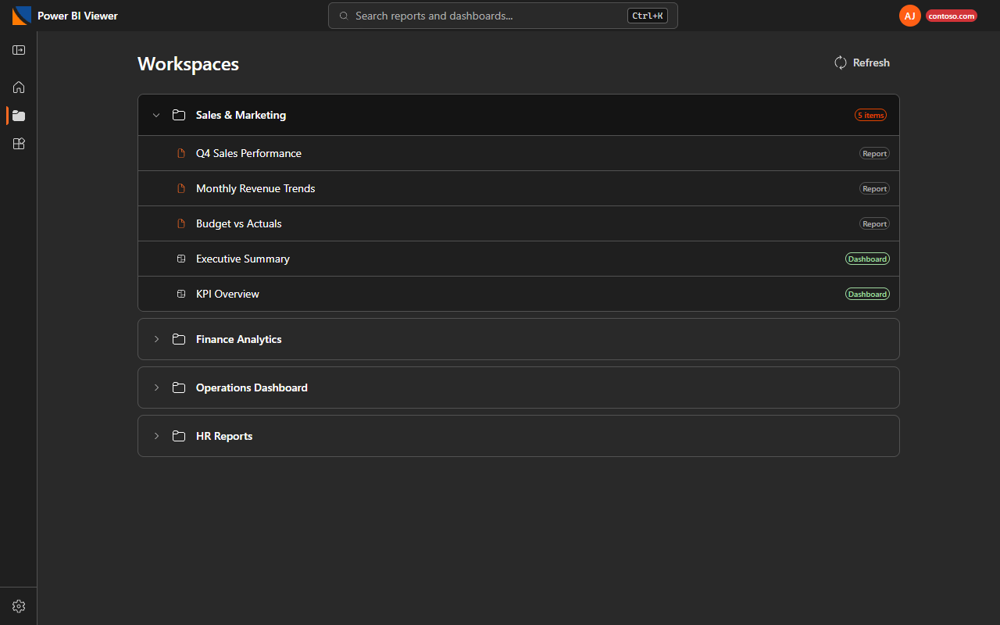
If a workspace's contents fail to load — all of it or just part of it — a small warning row appears in that workspace with a Retry button. For example: "Could not load this workspace. Check your connection or your permissions." Click Retry and it fetches again. The rest of the page keeps working.
6Power BI Apps
Apps are the polished, packaged way your team delivers a whole suite of reports to you. For most people, this is the main place to work.
The Apps page
Click Apps in the sidebar. You see a card for each app — its name, who published it, and when it was last updated — with an Open button.
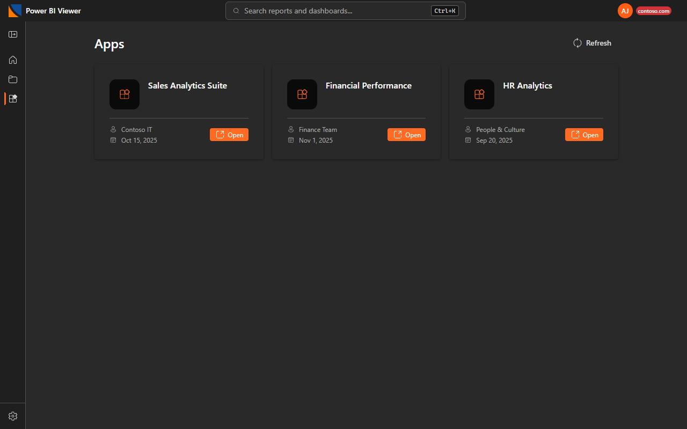
Inside an app
- The app opens as the full Power BI app experience, right inside the window — the same menus and navigation you would see on the Power BI website.
- The toolbar above it keeps things simple: Back to Apps, the app's name, the data freshness strip, and Refresh.
- Because of the shared sign-in, the app never asks you to log in again.
Inside an app, navigate with the app's own left-hand menu and tabs — exactly like the web. Use the toolbar's Back to Apps button when you want to leave.
The list only shows apps that are installed for your account. Ask your administrator to push it to you, or open it once on app.powerbi.com in your browser, then come back and click Refresh on the Apps page. See Troubleshooting.
7Reports & dashboards
Open a report or dashboard from Home, Workspaces, or Search. A slim toolbar sits above it.
The toolbar, left to right
- Back — returns to where you came from. Next to it, a breadcrumb shows "Home › <name>".
- Data freshness strip — two small timestamps that tell you how current the data is. This is important enough to get its own section.
- Refresh — pulls the latest data. While working it reads "Refreshing…" and is briefly disabled. When it finishes, a green ✓ Updated appears for a few seconds.
- Export PDF — saves the current view as a PDF. See Export to PDF.
- Slideshow — reports only. Starts presentation mode. See Slideshow.
- Full screen — the corner-arrows icon. Press Esc to leave full screen.
Working with a report
- The report keeps its normal Power BI filters pane and page tabs — use them exactly as on the web.
- In full screen on a multi-page report, the ← and → arrow keys change pages. A small hint in the corner shows the page count.
- When you click Refresh on a report, it updates the data in place — your current page, filters, and selections are kept.
Working with a dashboard
- Click any tile to drill into the report behind it. Use Back to return.
- A dashboard draws from several data sources, so its freshness label reads "Oldest data" — the age of the oldest tile, your "is anything stale?" signal.
- Slideshow is not available on dashboards — it is a report feature.
You'll see a short message and a Try again button — click it to reload. If an item was truly deleted, it disappears from your Recent and Frequent lists automatically. More help in Troubleshooting.
8Is my data up to date?
Every viewer — report, dashboard, or app — shows a small freshness strip on the right side of the toolbar. It answers one question at a glance: how current is what I'm looking at?
The two timestamps
| Line | What it means |
|---|---|
| Data refreshed | When the data behind this screen was last refreshed inside Power BI. A live age in brackets — "(12 min ago)" — ticks up every minute. On dashboards (and apps that bundle several reports) this line is labelled "Oldest data" and shows the oldest source on screen. |
| Dataflow | When the pipeline that feeds the data last finished bringing in new source data. Think of it as the step before: the dataflow gathers fresh numbers, then the dataset refresh loads them into your report. |
A refresh can run on time but re-use old source data. If Data refreshed is recent but Dataflow is much older, the screen refreshed — but the underlying numbers may not have changed since the dataflow last ran. When both are recent, your data is genuinely current.
What the strip looks like in each state
Reading the signals
- "—" dashes: the app is still checking. The real times appear within moments of opening.
- ● Newer data available The data behind this screen has refreshed since you opened it. The screen is showing slightly older numbers — click Refresh to catch up.
- ✓ Updated A refresh just finished and the screen now shows the latest data. The green confirmation fades after about 5 seconds.
- ⚠ Older than a day If a timestamp is more than 24 hours old it turns an amber warning color with a ⚠ marker — worth a second look, or a question to your data team.
Auto-refresh: reports update themselves
In Settings → Data Refresh there is a switch called Auto-refresh reports. It is On by default, and with it on:
- An open report quietly checks for newer data every few minutes.
- The moment newer data is found, the report re-pulls it in place — your page, filters, and selections are untouched.
- You'll simply see the green ✓ Updated flash. No clicks needed.
With auto-refresh off, reports show the orange ● Newer data available notice instead, and you choose when to click Refresh.
A dashboard or app can't be updated invisibly in place, so they always show the "● Newer data available" notice when new data lands — click Refresh when you see it.
Click Refresh any time. The button reads "Refreshing…" while it works, then the ✓ Updated confirmation appears and the "newer data" notice clears. If nothing seems to happen, wait a few seconds and click again — Power BI ignores refreshes fired within about 15 seconds of each other.
9Search
Press Ctrl+K (Cmd+K on Mac) from anywhere, or click the search box in the title bar.
Results appear as you type. Each result shows what it is — Report, Dashboard, App, or Workspace — plus the workspace it lives in.
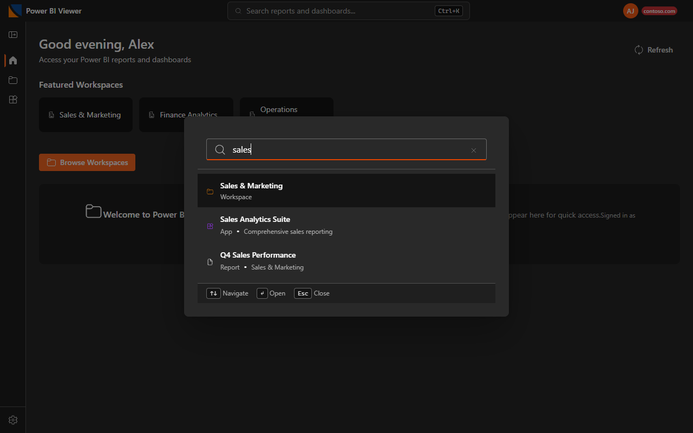
Using the keyboard
- ↑ / ↓ — move through the results
- Enter — open the highlighted result
- Esc — close search
Choosing a workspace jumps you to the Workspaces page with that workspace already expanded.
10Slideshow & wall displays
Slideshow turns a report into a full-screen presentation that advances on its own — ideal for a TV or lobby screen.
Start a slideshow
- Open a report (slideshow is for reports only).
- Click Slideshow in the toolbar. The report goes full screen.
- Press Play to start auto-advancing; Pause to stop on a slide.
Slides can be the report's pages, its bookmarks, or both — choose in Settings → Slideshow.
On-screen controls
The controls fade away after a few seconds while playing; move the mouse to bring them back.
- Top: Exit, the current slide name, a counter, and a gear to adjust the advance speed on the spot.
- Bottom: Previous / Play-Pause / Next, plus dots (or a slider for very long decks) showing where you are.
- A small corner panel lists the keyboard keys.
Kiosk mode — unattended wall displays
Turn on Auto-start slideshow in Settings and the slideshow starts playing by itself and runs unattended. In kiosk mode the app:
- Keeps the screen awake (no sleep, no screensaver) while playing.
- Hides the mouse pointer after a few seconds of stillness.
- If a slide hits an error, it retries on its own until the screen recovers.
🚪 How to exit a slideshow
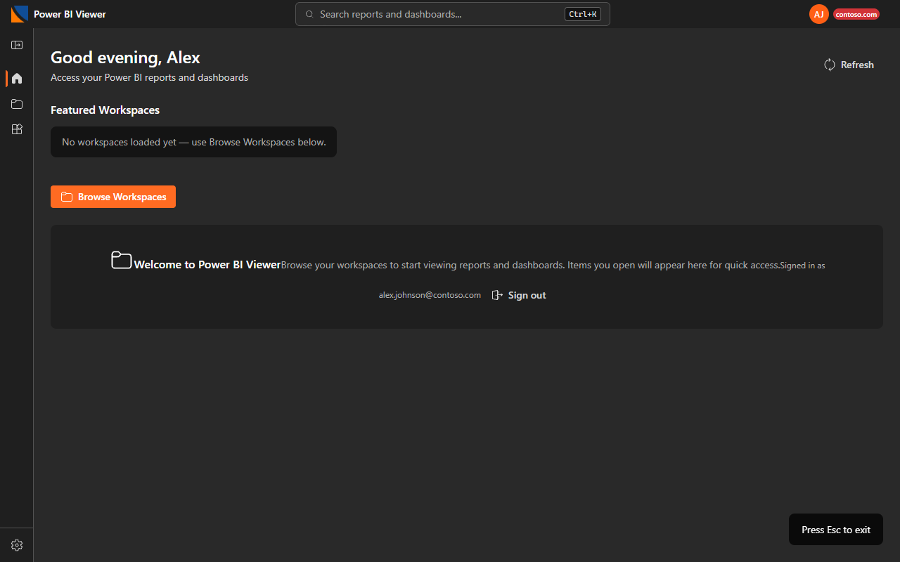
It is Ctrl+Shift+Q — not Ctrl+Shift+Esc, which Windows reserves for Task Manager.
Slideshow keys
- → or Space — next slide · ← — previous slide
- P — play / pause
- Esc — exit a manual slideshow
11Export to PDF
On a report or dashboard, click Export PDF in the toolbar to save what you're looking at.
- Set up the view first — the export captures the current view: the active page, plus any filters or selections you have applied.
- Click Export PDF. The button reads "Exporting…" while it works.
- A short message appears in the toolbar — for example "Exported to PDF" — when it's done.
Export PDF is available on reports and dashboards. Inside an app, open the specific report you need from a workspace if you want to export it.
12Your account
Click your avatar in the top-right to see your name and email, with two actions.
Switch account
Switch account signs the current account fully out — clearing everything it left behind, so nothing carries over — and then opens Microsoft's account picker so you can sign in as someone else.
Sign out
Sign out shows a confirmation: "You will be returned to the sign-in screen. Any open reports will be closed." Choose Cancel or Sign out. There is also a Sign out button in Settings → Account.
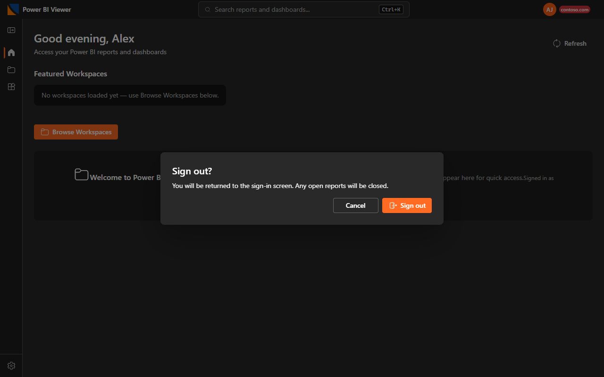
13Settings
Open Settings from the bottom of the sidebar. Changes save and apply immediately.
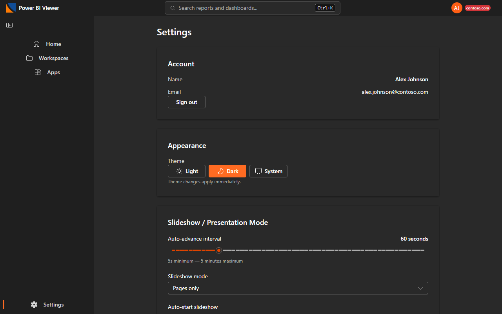
| Card | What it does |
|---|---|
| Account | Your name and email, plus a Sign out button. |
| Appearance | Theme: Light / Dark / System. Applies instantly. The app starts out Dark. |
| Slideshow / Presentation Mode | Auto-advance interval (5 seconds to 5 minutes); Slideshow mode (Pages only / Bookmarks only / Pages and bookmarks); Auto-start slideshow (On turns on the kiosk behavior described in Slideshow). |
| Launch on Startup | What the app opens when it launches: Show home screen, Open a specific report, or Open a specific app. A picker appears for the report (from your recent/frequent reports) or the app. |
| Data Refresh | Auto-refresh reports (On by default) — open reports update themselves the moment newer data is published; see Is my data up to date?. The Refresh interval slider (1 minute to 2 hours) sets the refresh pace for slideshows and kiosk displays. |
| Usage History | Clear usage history on sign-out: Never / Always / On shared machine. Plus Clear usage history now, which empties Recent and Frequent. |
| Reset | Reset all settings to defaults. This does not sign you out. |
| About | Your app version and an Open user guide button that opens this guide. |
Light vs. Dark
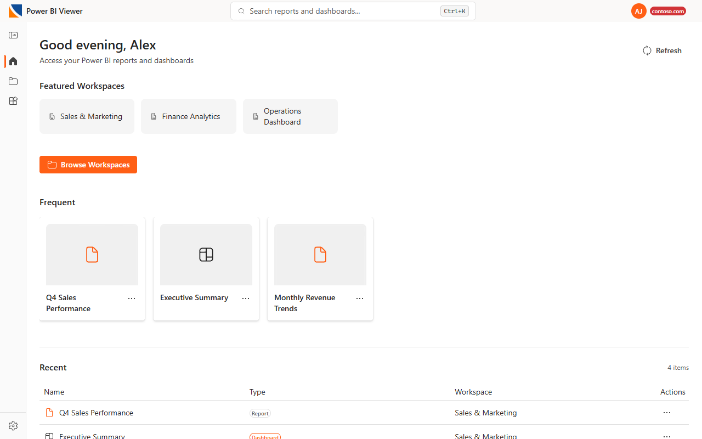
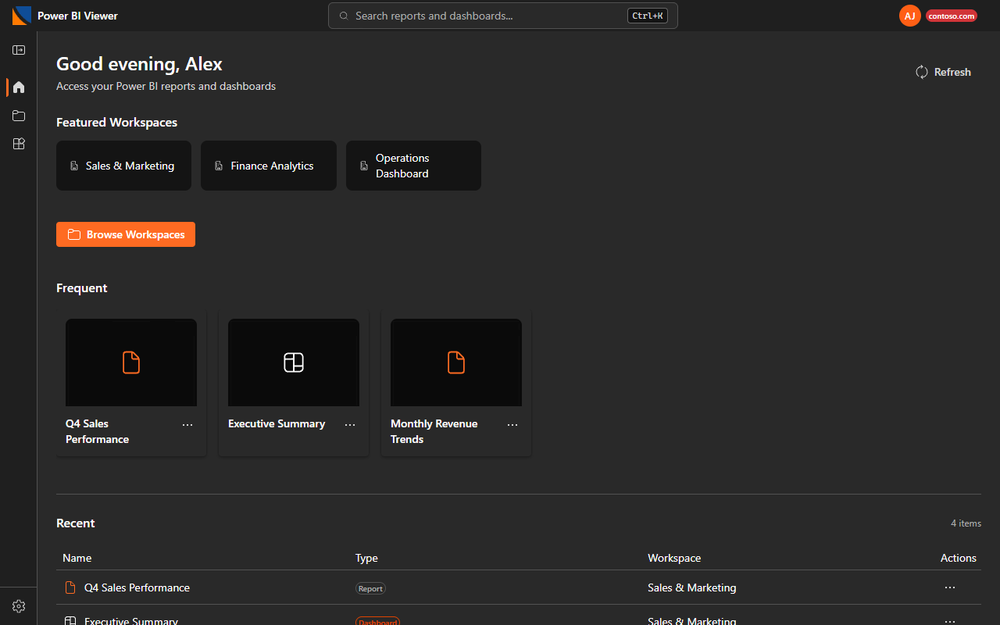
14App updates
You don't need to manage updates. Here is what to expect on each platform.
On Windows: it updates itself
- The app quietly checks for new versions in the background and downloads them while you work.
- The update installs the next time you close and reopen the app. You won't see installers or progress bars — one day it's simply the newer version.
- Very occasionally an update is urgent. Then you'll see a short message — "A required update is ready" — and the app restarts itself within about half a minute to apply it.
On Mac: a polite nudge
- When you open the app and a newer version exists, a message offers a Download button.
- Click Download, then drag the new Power BI Viewer.app into Applications to replace the old one — the same as installing.
- Choose Later if it's a bad moment; it will offer again next launch.
Look in Settings → About. Support may ask for this number.
15Keyboard shortcuts
| Where | Keys | What it does |
|---|---|---|
| Anywhere | Ctrl+K (Cmd+K Mac) | Open Search |
| Search | ↑ / ↓, Enter, Esc | Move, open, close |
| Report (full screen) | ← / → | Previous / next page |
| Report (full screen) | Esc | Leave full screen |
| Slideshow | → or Space / ← | Next / previous slide |
| Slideshow | P | Play / pause |
| Slideshow (manual) | Esc | Exit |
| Kiosk slideshow | Hold Esc 3 seconds, or Ctrl+Shift+Q | Exit (a single Esc tap is ignored) |
16Troubleshooting
Most problems fix themselves with one click — the app always offers a Try again or Retry button when something fails.
Click Try again — it reloads the app cleanly and usually works on the second attempt. If the message mentions your connection, a proxy, or a VPN, check your internet (or switch off the VPN) first, then Try again. The first-ever open of an app is also the slowest; later opens are faster.
Click Try again. If it still fails, you may not have access anymore, or the item was moved or deleted. Items that no longer exist are removed from your Recent and Frequent lists automatically. Use Ctrl+K search to check whether it's still there under the same name.
A warning row appears inside that workspace with a Retry button — click it. If it says only reports (or only dashboards) failed, the other half still works while you retry. If Retry keeps failing, it's usually a connection blip or a permissions change — try the page-level Refresh, and ask your administrator if it persists.
Normally you stay signed in across restarts. A new prompt is expected after you sign out, switch accounts, change your password, or leave the app unused for a very long time. Just click Sign in with Microsoft again.
The red bar tells you why. Most often it's a network hiccup or a closed Microsoft window — just retry. If the message mentions permission or consent, your administrator needs to approve the app for your organization; send them the exact message.
The Apps page only lists apps installed for your account. Two fixes:
- Easiest: ask your administrator to push the app to you — then it appears on its own.
- Self-serve: open the app once at app.powerbi.com in your web browser, then come back and click Refresh on the Apps page.
Check the freshness strip in the toolbar. If you see the orange "● Newer data available" notice, click Refresh. If "Data refreshed" is recent but "Dataflow" is old, the data pipeline hasn't delivered new numbers yet — that's a question for your data team, not a problem with the app. An amber ⚠ means the data is more than a day old.
If you started it yourself, press Esc once. If it started on its own (kiosk), hold Esc for 3 seconds or press Ctrl+Shift+Q. The reminder in the bottom-right corner always shows which one applies.
The app keeps the screen awake only while the slideshow is actually playing — check it isn't paused. If it still sleeps, the monitor's or computer's own power settings are overriding it; ask whoever set up the display to check those.
The app keeps a small technical log that helps support see what happened. If your Settings page has an Open log folder button, click it and send the files. Otherwise you can find the folder yourself:
- Windows: press Win+R, paste
%AppData%\Power BI Viewer\logs, press Enter. - Mac: in Finder choose Go → Go to Folder… and paste
~/Library/Logs/Power BI Viewer.
Send the main.log file (and main.old.log if present). Logs contain technical events only — not your report data.
Note your app version (Settings → About), what you clicked, and the exact message on screen, and send those to your administrator. A screenshot helps a lot.